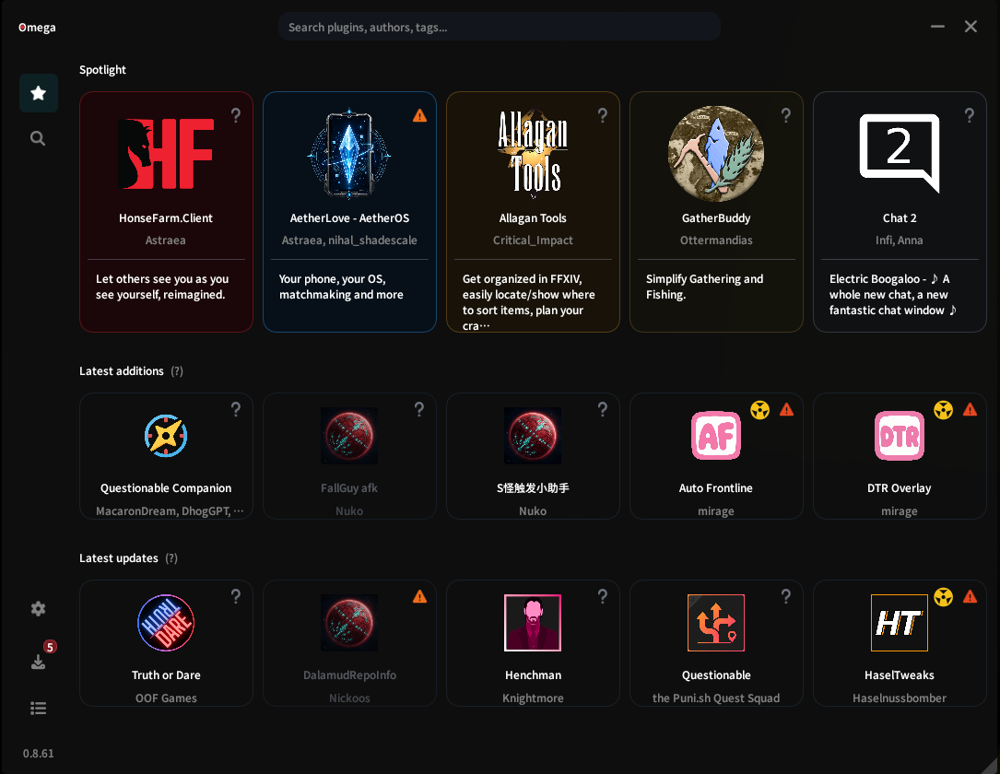

Dalamud curates deliberately.
It owns the install flow and maintains a curated official repository. That focus helps keep the familiar path dependable.
The wider Dalamud plugin marketplace
Discover official and community Dalamud plugins in one searchable in-game storefront. Compare repositories, versions, screenshots, dependencies, permissions, and known vulnerability information before choosing where to install from.
Omega makes the wider plugin ecosystem easier to browse and understand while Dalamud stays in control of installation, updates, disabling, and removal. We believe informed consent is better than ignorance.
Why two systems?
Dalamud cannot be an all-seeing directory, security team, and guarantor for every public plugin project. The wider ecosystem still exists, and plugins outside the official repository can still be installed. Omega makes that world easier to inspect without asking Dalamud to become something it should not be.
It owns the install flow and maintains a curated official repository. That focus helps keep the familiar path dependable.
Public repos, mirrors, and independent projects are easy to find if you know where to look. They are not automatically bad; they are just outside that curated boundary.
Omega can discover, collect, compare, and explain. It does not call an external project safe; it gives us more information before we install it.
How Omega fits
Search the Rift. Gather the data. Put it through a trial. Then give us a clearer record before we install.
See the full field recordOmega reaches beyond the familiar feed and keeps track of public plugin sources and project pages.
Downloads and available source go through static inspection. The result is evidence and its limits, not a verdict or a magic safety spell.
The useful context appears next to your repositories, installed plugins, and the button you are about to press.
When you are ready to install, Dalamud performs the explicit action and continues to manage the plugin.
Why call it Omega?
The name is a nod to the Omega raids: a machine crossing the Rift, gathering data, and putting its subjects through trials. This Omega does the same with public plugin information. It can collect the record, but it cannot decide what belongs in your game.
How the security stuff worksSet your course
In game
Discovery works best next to the repositories you use, the plugins you already have, and the install flow that is about to run. That is why Omega lives in game instead of becoming another website tab.
